Severe acute respiratory syndrome (SARS)
Latest update: 2025-02-26
Source:vignettes/pathogen_sars.Rmd
pathogen_sars.RmdIn 2018, the World Health Organization (WHO) published a list of nine known pathogens (in addition to an unknown Pathogen X) for research and development (R&D) prioritisation, due to both their epidemic and pandemic potential and the absence of licensed vaccines or therapeutics. Among these prioritised pathogens is SARS.
The Pathogen Epidemiology Review Group (PERG) has published a systematic review for SARS, if you use any of our results please cite our paper:
@article{, author = {}, year={2024},
title={},
doi = {}, publisher = {Cold Spring Harbor Laboratory Press}, URL = {}, eprint = {}, journal = {medRxiv} }
All Figures from the paper are re-produced below on the latest available data in our data set. For convenience we label the Figures with the same numbers as in the paper.
Figure 1: Please see the pre-print for the the PRISMA flowchart. This will remain static as data in the database is updated.
Overview of the SARS epidemic
Overview of the SARS epidemic, based on final report of the Hong Kong SARS Expert Committee. Coloured countries and special administrative regions are those which reported confirmed SARS cases. Inset tables are shown for all locations with reported local SARS-CoV-1 transmission, indicating total cases, median age (except for China, for which median age was not reported), CFR, percentage of imported cases and dates of symptom onset of first and last case. In the bottom left corner, we report the mixed-effect logistic regression estimates of adjusted CFRs for locations with local transmission: red squares indicate location-specific estimates. Red diamonds represent overall common effect estimates - in which all aggregated data are assumed to come from a single data-generating process with one common CFR, and overall random effect estimates - that allow the CFR to vary by location and accordingly give different weights to each location in the overall estimate (SM-A.3.2). The “Events” column indicates the reported number of deaths. GLMM=generalised linear mixed-effects model (SM-A.3.2).
Figure 2
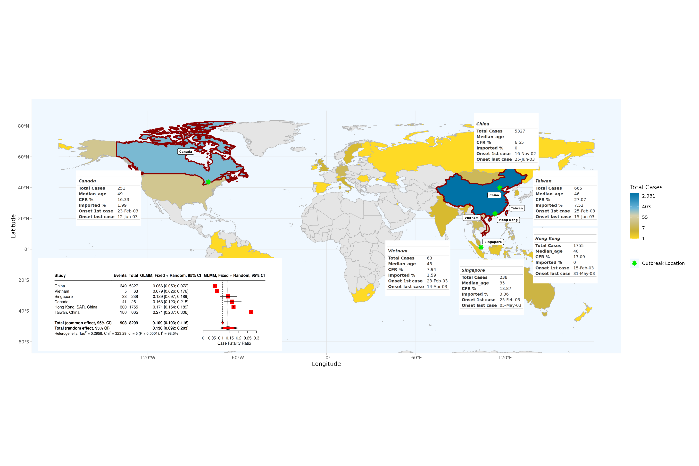
Overview of estimates SARS-CoV-1 reproduction numbers
Overview of estimated SARS-CoV-1 (A) basic reproduction numbers (R0) and (B) effective reproduction numbers (Rt). Circles represent mean estimates, and triangles represent unspecified central estimates. Thin black solid lines represent uncertainty estimates, and solid shaded bars represent ranges of central estimates reported, e.g. when disaggregated by certain characteristics (e.g. age, sex, region, time) or using different estimation methods. Colours represent when during the outbreak the study was conducted, as extracted by reviewers. The vertical dashed line indicates the threshold value of 1. Estimates are labelled with the country of study. CHN = China, HKG = Hong Kong, SGP = Singapore, CAN = Canada, TWN = Taiwan, VNM = Vietnam. Outlying estimates from Kwok (2007) (33) and Moser (2015) (34) are not displayed. Only parameters from studies with a QA score > 0.5 are plotted.
Figure 3A: Basic Reproduction numbers
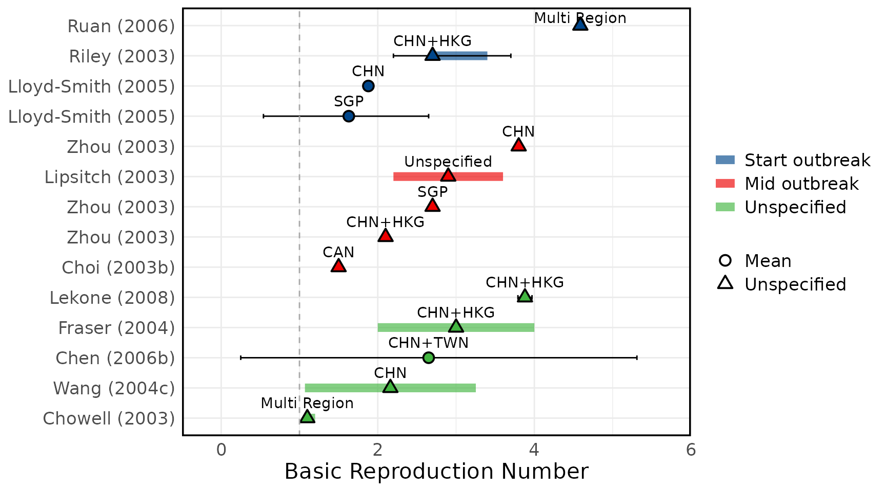
Figure 3B: Effective Reproduction numbers 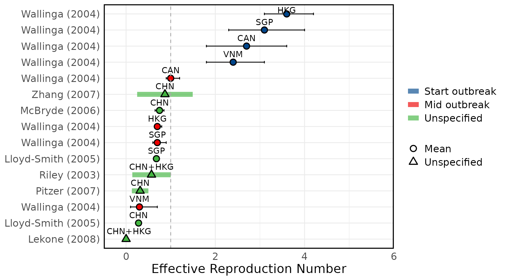
Other SARS-CoV-1 transmission parameters
Overview of estimated SARS (A) attack rates, (B) secondary attack rates, (C) growth rates, (D) overdispersion, (E) evolutionary rates, (F) substitution rates. Circles represent mean estimates, and triangles represent unspecified central estimates. Thin solid lines represent uncertainty estimates, and solid shaded bars represent ranges of central estimates reported, e.g. when disaggregated by certain characteristics (e.g. age, sex, region, time) or using different estimation methods (e.g. compartmental, branching process models, etc). Colour represents (A & B) the study population considered, (C & D) when during the outbreak the study was conducted, with “control measures” referring to a time in the outbreak when interventions were reported to be in place, (E & F) long (L)/short (S) gene segment. In E and F, s/s/y refers to nucleotide substitutions per site per year. Only parameters from studies with a QA score > 0.5 are plotted.
Figure 4A: Attack rates
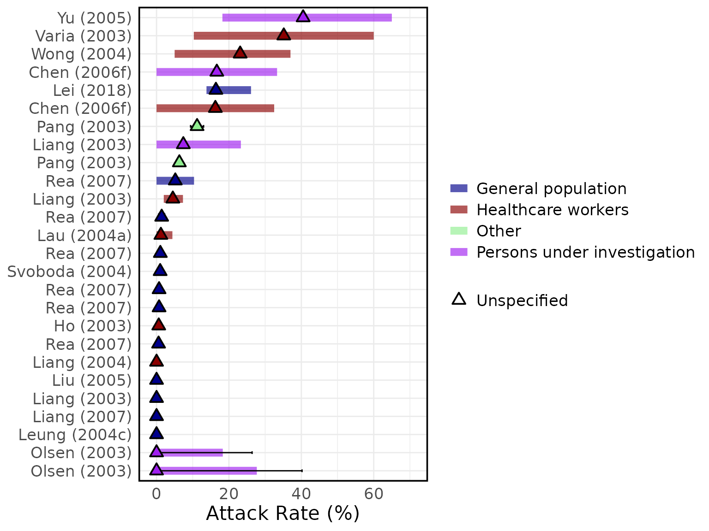
Figure 4A: Secondary Attack rates
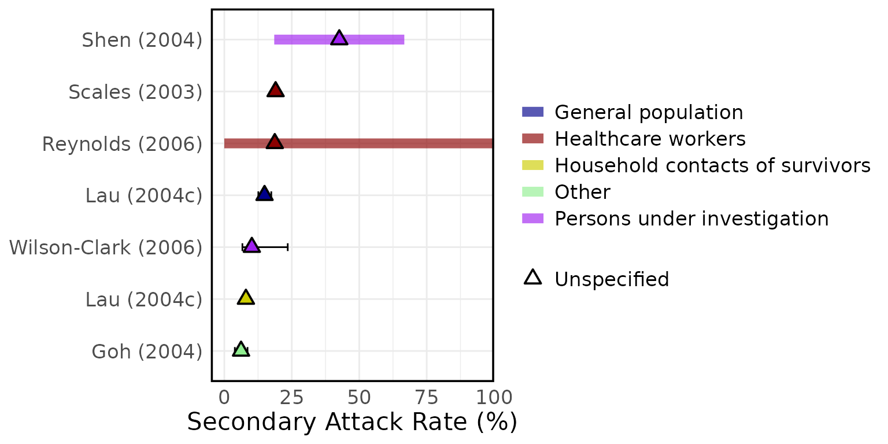
Figure 4C: Growth rates
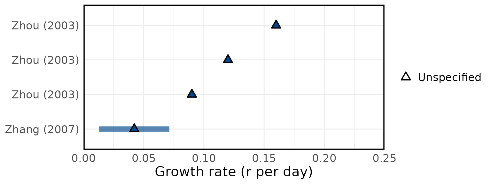
Figure 4D: Overdispersion
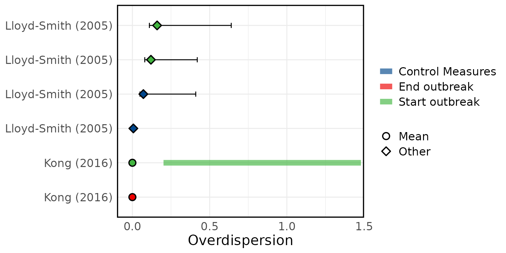
Figure 4E: Evolutionary rates
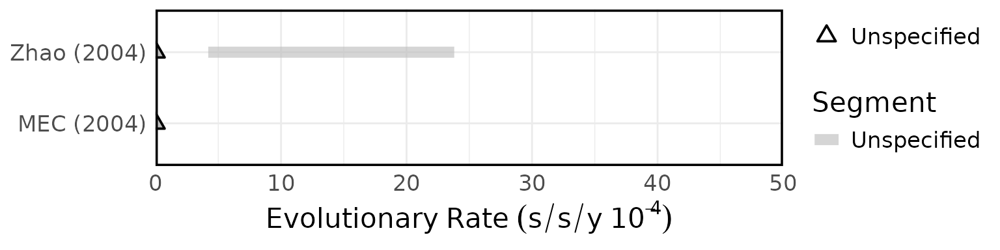
Figure 4F: Substitution rates
Delays
Overview of SARS epidemiological delays: estimates of (A) mean serial interval, (B) mean infectious period, (C) mean duration from hospital admission to final health outcome (i.e. death or recovery); and meta-analysis of epidemiological delays: estimates of (D) mean incubation period, (E) mean duration from symptom onset to hospital admission. In panels A, B, & C, circles represent mean estimates, squares represent median estimates, and triangles represent unspecified central estimates. Thin solid lines represent uncertainty estimates, and solid shaded bars represent the range of central estimates reported, e.g. when disaggregated by certain characteristics (e.g. age, sex, region, time) or using different estimation methods. In plot C, colour represents different final health outcomes. In D, blue squares indicate common effect and random effect estimates across different study populations, and blue diamonds represent: overall common effect estimates - in which all aggregated data are assumed to come from a single data-generating process, and overall random effect estimates. In E, blue squares represent study specific estimates, and blue diamonds represent overall common effect and random effect estimates. Only parameters from studies with a QA score > 0.5 are plotted.
Figure 5A: Serial Interval
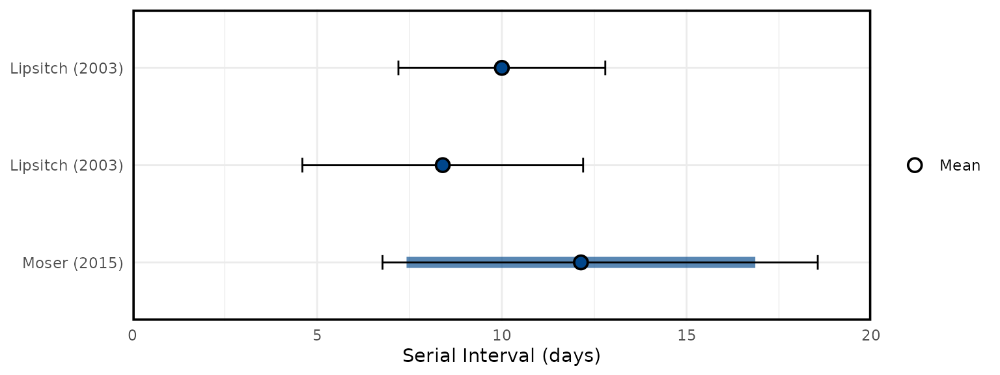
Figure 5B: Infectious Period
Figure 5C: Admission to outcome
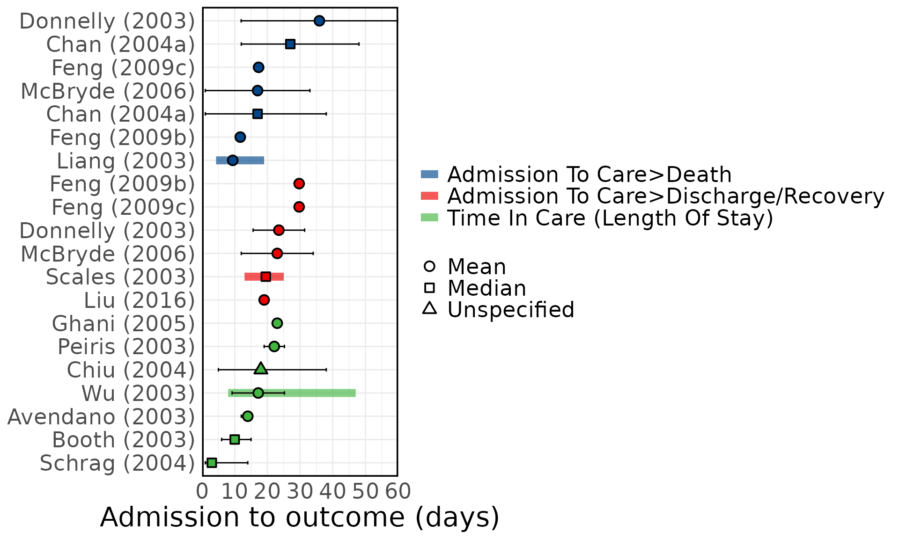
Figure 5D: Mean Incubation period meta-analysis
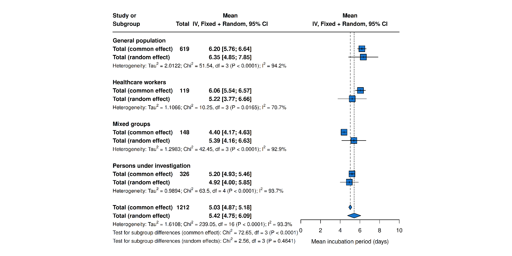
Figure 5E: Mean Onset to Admission meta-analysis